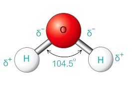
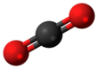
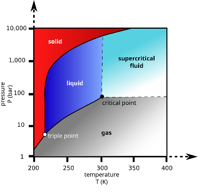

Lucas Campos, 2024
Esta página está em construção.
Outros Conteúdos: Física Nuclear Física

A água é composta por dois átomos de hidrogênio e um de oxigênio, tem um ângulo de ligação equivalente a 104.5° e o oxigênio tem mais eletronegatividade do que o hidrogênio, assim puxando os elétrons para mais perto do oxigênio, mesmo assim, o símbolo delta (δ) indica que a carga positiva ou negativa é parcial. É como se fosse um "cabo de guerra" entre o hidrogênio e o oxigênio.
Ponto de Solidificação: 0°C à 1 atm
Ponto de Fusão: >0°C à 1atm
Ponto de Ebulição: 100°C à 1 atm

O Dióxido de Carbono é formado por um átomo de carbono e uma molécula de oxigênio, tem um ângulo de ligação equivalente a 180° (geometria linear)

Variações de um mesmo elemento com número de nêutrons e massa diferentes.